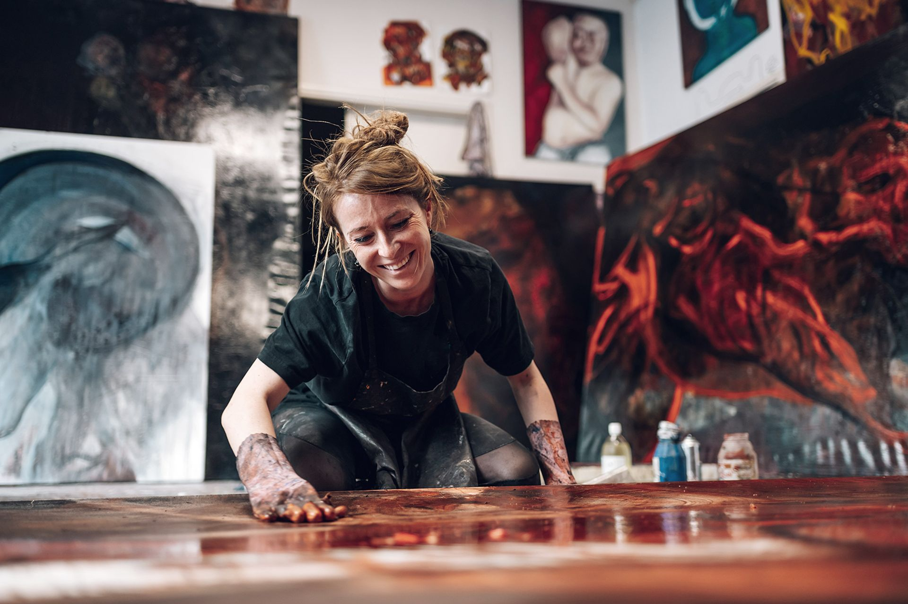

Sie sind freiberuflicher Medienschaffender, Publizist oder Künstler und benötigen professionelle Beratung im Bereich Künstlersozialkasse oder allgemein zur Absicherung & Vorsorge?
Als Mitglied von Freie Wildbahn e.V. stehen wir Ihnen ganzjährig mit Rat und Tat zu folgenden Themen zur Seite:
Früher oder später sitzen viele Künstlerinnen und Künstler sowie Publizistinnen und Publizisten vor dem KSK-Antrag und stellen fest: Der ist gar nicht so einfach auszufüllen, und es können schnell Fehler passieren.
Freie Wildbahn e.V. hilft Dir beim Ausfüllen Deines KSK-Antrags und erklärt Dir, worauf Du achten musst.
Außerdem stehen wir Dir im Falle einer KSK-Prüfung Deines tatsächlichen Arbeitseinkommens zur Seite und unterstützen Dich dabei, den Papierkram strukturiert, sicher und fristgerecht zu erledigen.
Auf Wunsch unterstützen wir Dich als Vereinsmitglied auch bei der Korrespondenz mit der Künstlersozialkasse oder übernehmen sie im vereinbarten Rahmen. Diese Unterstützung ist im Rahmen der Mitgliedschaft ohne zusätzliche Beratungskosten möglich.
So kannst Du Dich voll und ganz Deiner Selbstständigkeit widmen.

Profitieren Sie langfristig von einer deutlich günstigeren Sozialversicherung, wenn Sie durch unsere Beratung Mitglied in der Künstlersozialkasse werden. Denn nach der Aufnahme in die Künstlersozialkasse sparen Sie als Mitglied mehrere hundert Euro monatlich für Ihre Sozialversicherung.
Hast Du manchmal mit Kunden zu tun, die auch nach der dritten Mahnung Deine Dienstleistung nicht bezahlen?
Unsere Partnerkanzlei bietet Dir als Vereinsmitglied für solche Fälle außerbehördlich und außergerichtlich eine kostenfreie Inkassoberatung an.
Diese umfasst die Prüfung, ob die Forderung bislang unbestritten ist und bei weiterer Beauftragung die Voraussetzungen für eine Kostenübernahme durch die Gegenseite erfüllt sind.
Solltest Du die Partnerkanzlei mit der weiteren Geltendmachung der Forderung beauftragen, so wird die außergerichtliche Tätigkeit Dir nur dann in Rechnung gestellt, wenn das Verfahren erfolgreich ist und die Gegenseite rechtlich zur Erstattung der entstandenen Kosten verpflichtet ist.
Falls die außergerichtliche Tätigkeit jedoch nicht zum Erfolg führt, wird Dir als Vereinsmitglied der Aufwand hierfür nicht berechnet, sodass für Dich kein Kostenrisiko besteht.
Sollte sich die Gegenseite außergerichtlich weigern, Deine Forderung auszugleichen, kannst Du im nächsten Schritt über die Partnerkanzlei auch ein gerichtliches Mahnverfahren einleiten lassen.
In diesem Fall fallen jedoch gesetzliche Mindestgebühren in Form von Gerichts- und Anwaltskosten an, welche wir Dir vorab transparent kommunizieren werden.
Du kannst dann frei entscheiden, ob Du die Forderung weiter gerichtlich verfolgen lassen möchtest oder ob Du das Verfahren einstellen willst, ohne ein Kostenrisiko zu tragen.
Hast Du eine offene Forderung und möchtest unseren Inkassoservice in Anspruch nehmen oder hast Du Fragen zu Deinem konkreten Fall?
Dann buche gerne einen Termin zur kostenlosen Inkassoberatung, bei dem wir Deinen Fall und den genauen Ablauf des Inkassoverfahrens besprechen können.
Als rechtlicher Berater bei Freie Wildbahn e.V. stehe ich unseren Mitgliedern bei Forderungsmanagement und Inkassoverfahren kompetent zur Seite.
Erscheinen Dir aufgrund Deiner nicht kalkulierbaren Einnahmen Themen wie Versicherungen und Vorsorge oft als unbequem?
Ist es schwer für Dich als freiberuflicher Künstler oder Publizist, den Durchblick bei der Menge an Informationen und Ratschlägen zu behalten?
Freie Wildbahn e.V. bietet Dir als Vereinsmitglied qualifizierte Beratung und fachkundige Unterstützung zu den Themen Vorsorge und Versicherung.
Gemeinsam mit unseren Versicherungsexperten erfolgt die Ermittlung Deines finanziellen Status quo und die Erstellung Deines Risikoprofils.
Anschließend gibt es für Dich im Rahmen Deiner Möglichkeiten eine konkrete Maßnahmenempfehlung.
Wir sind spezialisiert auf die besonderen Bedürfnisse von freischaffenden Künstlern, Publizisten und Journalisten und können Dich daher umfassend zum Thema Krankenkasse, Berufsunfähigkeitsvorsorge und Zusatzversicherungen beraten.
Du benötigst eine Spezialversicherung für Dein Kamera- oder Musikequipment? Kein Problem!
Dank der günstigen Rahmen- und Gruppenverträge, die Freie Wildbahn e.V. mit Versicherern abschließt, profitierst Du als Mitglied von rabattierten Sonderkonditionen.

Kosten der Vereins-Mitgliedschaft:
Für jeden weiteren Gesellschafter wird bei der Gesellschaft ein Mitgliedsbeitrag von €160,–/Jahr (entspricht €13,34/Monat) erhoben.
Profitieren Sie langfristig von einer deutlich günstigeren Sozialversicherung, wenn Sie durch unsere Beratung Mitglied in der Künstlersozialkasse werden. Denn nach der Aufnahme in die Künstlersozialkasse sparen Sie als Mitglied mehrere hundert Euro monatlich für Ihre Sozialversicherung.
Nein. Du kannst die KSK-Beratung unabhängig von einer Mitgliedschaft buchen. Erst nach der Beratung entscheidest Du separat, ob Du Mitglied bei Freie Wildbahn e.V. werden möchtest.
Im Mittelpunkt stehen die laufende Unterstützung rund um Deine KSK-Situation, die KSK-Fachberatung im Rahmen der Mitgliedschaft ohne zusätzliche Beratungskosten und auf Wunsch die Unterstützung bei der Kommunikation mit der KSK.
Hinzu kommen der Erinnerungsservice und der digitale Mitgliederbereich. Soweit angeboten, können außerdem Mitgliedskonditionen für betriebliche Sachversicherungen verfügbar sein.
Du buchst und bezahlst zuerst die KSK-Beratung.
Entscheidest Du Dich nach der Beratung innerhalb von zwei Arbeitstagen (48 Stunden) für die Mitgliedschaft bei Freie Wildbahn e.V., wird die bereits bezahlte Beratungsgebühr auf den Beitrag des ersten Mitgliedschaftsjahres angerechnet.
Das hängt davon ab, wie viel laufende Unterstützung Du brauchst.
Wenn Du regelmäßig KSK-Fragen klären, Unterstützung bei der Kommunikation nutzen oder weitere Mitgliederleistungen in Anspruch nehmen möchtest, kann die Mitgliedschaft sinnvoll sein.
Die erste Beratung hilft Dir dabei, Deinen Bedarf realistisch einzuschätzen.
Nicht Bestandteil der Leistungen sind:
Rechtliche Fragen werden nur als außergerichtliche Ersteinschätzung behandelt. Eine weitergehende anwaltliche Tätigkeit ist separat zu beauftragen.
Entscheide danach, ob die Mitgliedschaft bei Freie Wildbahn e.V. zu Dir passt.